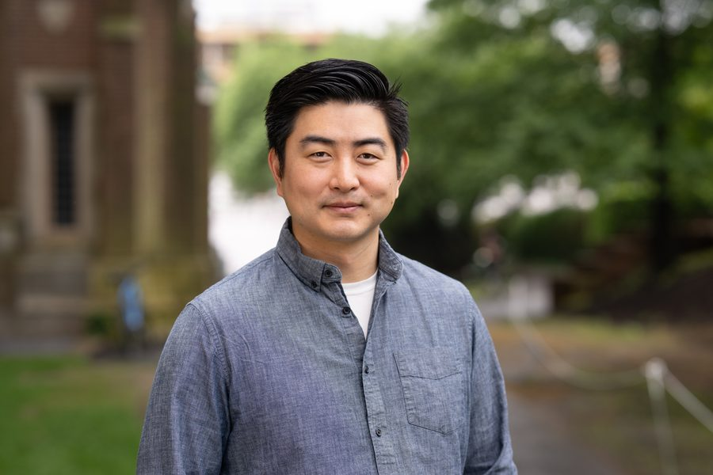

Principal Investigator

Bernard Y. Kim
Email: bernardkim [at] princeton -dot- edu
Principal Investigator.
Postdocs
Augusto Santos Rampasso
Email: rampasso [at] princeton -dot- edu
.
Skyler Berardi
Email: skylerberardi [at] princeton -dot- edu
.
Graduate Students
Jocelyn Wang
Email: jocelynwang [at] princeton -dot- edu
.